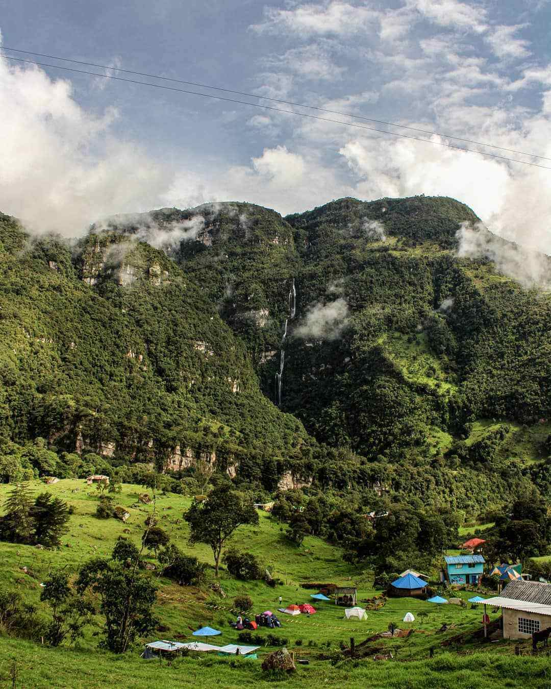

Temperatura promedio: 11°C – 21°C
Altura: 1.924 msnm
En el municipio de Choachí, oficialmente San Miguel de Choachí, es un municipio colombiano del departamento de Cundinamarca,
ubicado en la Provincia de Oriente, a 42 km al oriente de Bogotá se encuentra el Parque Aventura La Chorrera, hogar de un bosque
de niebla lleno de orquídeas, bromelias, aves y de las hermosas cascadas de La Chorrera y El Chiflón.
La Chorrera tiene al menos 590 metros de altura, está catalogada como la cascada más alta de Colombia y la sexta más alta
de toda Sudamérica. Uno de los mejores atractivos naturales del país, porque atraviesa la belleza del bosque andino y culmina
justo debajo de la imponente cascada para ver su impresionante caída.
Qué hacer | Caminar por el bosque de niebla hasta las cascadas, dar paseos a caballo, practicar espeleismo y rappel, y fuera del parque, visitar el pueblito de Choachí y los Termales de Santa Mónica. Para llegar debe hacer más o menos el siguiente proceso; en Bogotá en la Calle 6 con Av. Caracas puedes tomar un bus de Transoriente o Cootransfómeque hasta Choachí. El viaje dura 1 hora y media, los buses salen desde las 5 a.m. hasta las 8 p.m. y l pasaje cuesta $10.000 COP.
Hospedaje | Lleva tu carpa y duerme en una de las zonas de camping del Parque Aventura La Chorrera desde $15.000 COP.
En Choachí: Bellavista Hotel, Al Alba Jardín Hotel, El Porvenir y La Trini.
Temperatura promedio: 21°C
Altura: 1.336 msnm
Barichara es una ciudad del norte de Colombia conocida por sus calles con adoquines y su arquitectura colonial. En el centro está la
Catedral de la Inmaculada Concepción, de arenisca y con un altar de pan de oro. Otras iglesias importantes incluyen la Capilla encalada
de San Antonio, construida en el siglo XIX, y la Capilla de Santa Bárbara, sobre un cerro.
En las afueras al oeste de la ciudad, está el Cementerio de Barichara que tiene tumbas adornadas.
Barichara se encuentra a 110 kilómetros de Bucaramanga, y es uno de los lugares turísticos de Colombia ideales para recorrer a pie,
y perderse entre sus calles empedradas y construcciones de estilo andaluz.
Un pueblito cuyo nombre viene del dialecto Guane, derivado del chibcha, que significa «lugar para el descanso».
Además de ser uno de los lugares más lindos de Colombia, Barichara es hogar del Camino Real de Lengerke, un sendero natural y cultural, por el cual puedes caminar desde la glorieta de la Plaza de Bolívar, y por el cual después de 2 horas podrás llegar a la antigua y artesana población de Guane.
Qué hacer | En Barichara puedes visitar su mirador y contemplar los paisajes del cañón del río Suárez.
También, puedes ir a la Catedral de la Inmaculada Concepción, al Taller de Artes y Oficios, a la casa de Aquileo Parra, al Parque para las Artes y a Guane.